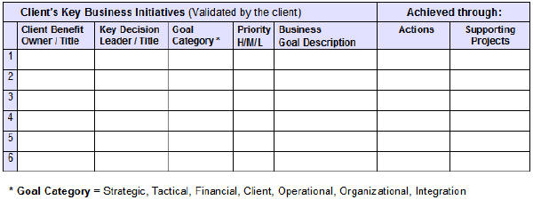
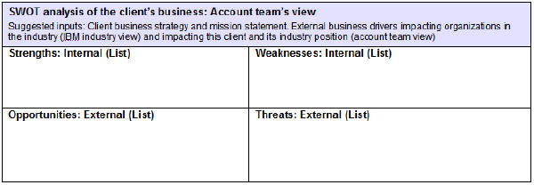

| Task: Understand Business Environment and Objectives |
 |
|
This task is implemented through high level executive interviews. It requires that the pre-sale Technical Solution Architect be able to discuss the state of their customer's business independent of I/T, introducing technology into the discussion only when it is clearly relevant to the executive for the business issue currently on the table. |
| Roles | Primary: | Additional: | Assisting: |
|---|---|---|---|
| Inputs | Mandatory: | Optional:
| External:
|
| Outputs | |||
This task starts with an effort to gain the right knowledge of the client's business environment to understand their business and their objectives. The architect should proceed from the outside in. That is, understand the industry, the broad business climate, key industry initiatives of competitors and partners. Then the scope begins to narrow to this client's environment, their goals, issues, objectives and initiatives. Several sources of information are available including:
One can group these assets into three broad categories:
See the TeamSD web site, "Where to Get Help" section at http://w3-03.ibm.com/support/tsdesign/help.html for links to many of these planning assets. For a more prescriptive approach to identifying appropriate information sources and extracting valuable customer (business) understanding, see the BIA technique referenced below in the Tools and Technique section. The Account Profile provides a current ‘snapshot’ of the client and is used as preparation for strategic account planning. As insight is learned, this information should be passed to account sales leader for update of the profile accordingly. Section 2: Account Organizational Profile may have useful information on the client’s business environment, goals and initiatives for this task. The following table that captures the client’s key business initiatives and goals shows the format of this data:  Another useful tool to capture interview results is from SWOT table from the Account Plan: Assess the Client’s Business section. The SWOT table documents the client's Strengths, Weaknesses, Opportunities and Threats.  The "Discovery Process" uses a very simple general discussion model which is intended to pull information out about
The results of these interviews should be documented by each participant and then are assessed to extract process relationships, goals, and primary issues. Watch to see if the business goals identified are SMART, i.e. they are Specific, Measurable or meaningful, Acceptable, Realistic, placed in a Timeframe.
Documenting the business drivers and strategies is essential to establishing a well-grounded technology
architecture. The real value of an architecture is to support the changing requirements of the business. In
order to better understand a customer's business, business drivers, and strategy, interview people from all functional
areas. To encourage and receive open and honest discussion from the interviewees, they should be asked open-ended
questions and promised that their comments would appear anonymously.
The first series of these interviews should not be focused too much on the "pain" process, although that is an excellent later follow up. A useful tool to capture this information is the "pain chain" which is a graphical representation of the interdependency of business problems (pains) within a client's organization. See the Guideline below for further information on this approach. At a minimum, the company's vision, mission, goals and strategic direction should be understood and documented. Tools and Techniques Many techniques and artifacts can be used to capture and evaluate a customer’s business direction considering both strategic and tactical needs and activities. These include:
|
Like other tasks in the Plan Phase of Team Solution Design, this is an on-going process. If there is a community (such as a client specific collaboration hub) used to store client information, the results of this task will be stored there for use on multiple projects. Additional effort on behalf of a specific opportunity will typically be limited to what is required to identify opportunities and no more. Enterprise Architecture Influence: Existing enterprise architecture is an important influence on solution design. For additional guidance on this topic, see the associated Guideline: The Role of Enterprise Architecture in Solution Design. The following EA artifacts (or their equivalents) should be considered when performing this task.
|
| Guidelines | |
|---|---|
| Whitepapers |
| Change Date | Wed Oct 14 11:41:36 IST 2015 |
|---|---|
| Revisions | November 2008 - baseline version|July 2009 - added CVM work products|December 2009 - added Business Direction as input|May, 2011 - added guidance on EA influence|July 2012 - minor text edit |
© Copyright IBM Corp. 1987, 2016 All Rights Reserved |